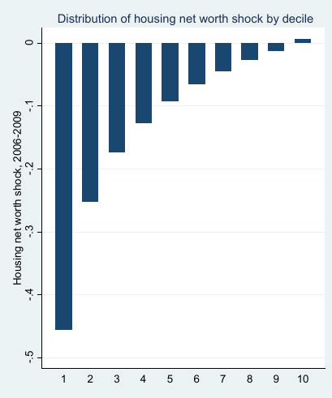

# Inequality in the United States
## EC 399: Economics of Inequality
## Spring 2017
### What is inequality?
- We now know how to think about inequality theoretically
- How do we measure inequality?
- What can the data tell us?
### Kuznets hypothesis
- Poor countries have homogeneous labor, mostly agriculture
- As countries develop, cities become industrial centers
- Creates urban/rural wage gap, increasing inequality
- As development increases, rural workers become educated and move to cities
- Reduces supply of rural workers, increases wages, decreases inequality
Kuznets Curve

Source: Wikipedia
### Piketty and Saez (2003)
- "Income inequality in the United States, 1913-1998"
- One of the first papers to estimate long-run evolution of inequality
- Two of the most prominent empirical researchers
- Renewed economists interest in inequality
- Much of these findings are included in Piketty's famous book (which we will talk about later)
### Data
- Tax return statistics reported by IRS
- Most people did not pay income tax prior to 1944, so focus on top 10%
- Gross income: Wages, profits, dividends, interest, rents, etc
- Exclude capital gains (people don't sell assets every year, therefore it is "lumpy")
- Calculated before any taxes, deductions, or transfers
### The fall in inequality
- World War II funded primarily through corporate income tax
- Top incomes were mostly earned through capital income
### Declining capital incomes
- Capital incomes for the top income earners have declined steadily since WWII
- Capital income is derived from wealth
- After WWII ended, why did capital incomes not recover to previous levels?
- Why are the wealthy not earning as much capital income today?
### Progressive taxation: A possible explanation
- Pre WWI taxes are relatively flat, allowed wealth to accumulate
- Great depression and WWII "shocks" decreased the wealth of the top earners
- Progressive taxation and corporate taxes prevented wealth from accumulating to previous levels
### The rise in inequality after 1970
- Primarily labor income
- Tax Reform Act of 1986: Top marginal tax rate changed from 50% to 28%
- Raised to 39.6% by 1993
- Initial cut coincides with rapid growth of top incomes
### A mystery?
- It's not clear from the data what is causing the rapid rise in top incomes
- Piketty and Saez speculate that changing social attitudes toward executive pay may be a factor
### Critiques of Piketty and Saez
- Only looking at income in the top 10%, ignoring inequality elsewhere in the distribution ("transfer sensitivity" principle)
- The unit of observation is the "tax unit", not weighting observations by number of people, children, etc
- Their definition of income ignores non-market sources
### What is income?
Piketty and Saez:
- Salaries and wages
- Capital gains
Other sources:
- Benefits
- Taxes
- "In kind" transfers
### Market vs comprehensive income
Market income:
- The pre-tax compensation earned in exchange for selling labor
- Income from capital: profits, interest, etc
Comprehensive income:
- Market income plus "everything else"
- The total money received that can be used to purchase goods and services
### Healthcare
- A large non-market source of income
- People need to consume health services whether or not they have insurance
- Employer-provided insurance isn't included in wages, by allows people to consume more than they otherwise could
- Kaestner and Lubotsky (2016), optional on Canvas
### Healthcare facts
- Healthcare expenses were 17% of GDP in 2014
- 70% of expenses paid by public or private insurance (not out-of-pocket)
- 36% of all expenses paid by Federal programs Medicaid and Medicare
- Average Medicaid recipient receives \$9,125 per year (family of 3)
### Medicare
- Covers nearly all citizens age 65 and older
- Covers some disabled citizens under 65
- Financed by 2.9% payroll tax (+0.9% for high income earners)
- Average beneficiary receives \$11,400
- Adults over 65 generally have lower income than those under 65
- Transfer from relatively high incomes to lower incomes
- Reduces inequality (principle of transfers)
### Medicaid
- Provides insurance for low income families
- Covers 60 million people
- Reduces inequality
### Affordable Care Act
- Allows states to expand Medicaid coverage (many don't)
- Offers subsidies to people with less than 400% federal poverty level
- Increased the coverage for low-income workers
- Reduces inequality
### Employer provided healthcare
- Most middle and high-income earners receive insurance through their employer
- Employee contributions untaxed -- increases income of middle and top earners
- Increases inequality
### Question:
In terms of well-being, is \$5,000 per year in healthcare subsidies the same as an additional \$5,000 in wages?
### Armour et al (2014)
- "Levels and Trends in U.S. Income and its
Distribution: A Crosswalk from Market
Income towards a Comprehensive
Haig-Simons Income Approach"
- How do different definitions of income change our measured inequality?
### Haig-Simons income
- Income is the amount of consumption plus the change in net worth
- Emphasizes consumption over market income
- A better representation of well-being
### Data
- Census Bureau's Current Population Survey, March supplement (March CPS)
- Survey data, asks respondents about *all* sources of income (minus capital gains)
- Health insurance status asked, and source of health insurance
- Health insurance premiums not captured, and are calculated by the Census Bureau
- Incomes are "top-coded", need to be estimated
- Capital gains, tax credits and liabilities predicted using a model
### The crosswalk
Describe income in 4 ways:
1. Market income (Piketty and Saez)
2. Add transfer payments (disability, unemployment, social security, etc)
3. Weight household size, add in kind transfers, add taxes
4. Add realized capital gains
### Capital gains
- "Realized" capital gains are only observed when assets are sold
- Changes in wealth depend on the capital gains that are not "realized"
- If your portfolio goes up and you don't sell, your "income" has increased (at least in present value)
### Why is the difference so dramatic?
In 2007, compared to 1989, lower income people owned more:
- Equity
- Housing (!)
- Businesses
### Housing since 2007
- Housing a primary source of capital "income"
- The 2007 recession resulted in a sharp decrease in housing
- This decrease was more severe among low-income home owners
- Housing shocks constrain ability to get credit, build wealth
Mian, Rao, Sufi (2013)

Mian, Rao, Sufi (2013)
 ### What can we conclude?
- Non-market sources of income matter
- Recent inequality caused by labor income, top 1%
- Capital gains matter
- Unresolved: How has capital ownership changed since the last recession?
### What can we conclude?
- Non-market sources of income matter
- Recent inequality caused by labor income, top 1%
- Capital gains matter
- Unresolved: How has capital ownership changed since the last recession?